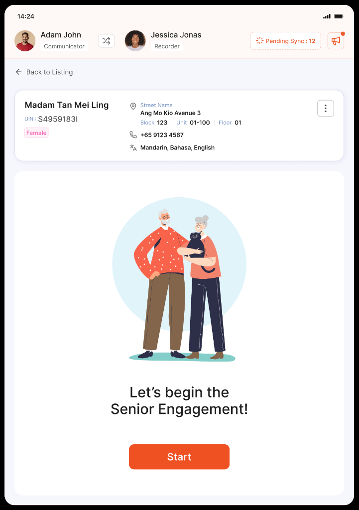
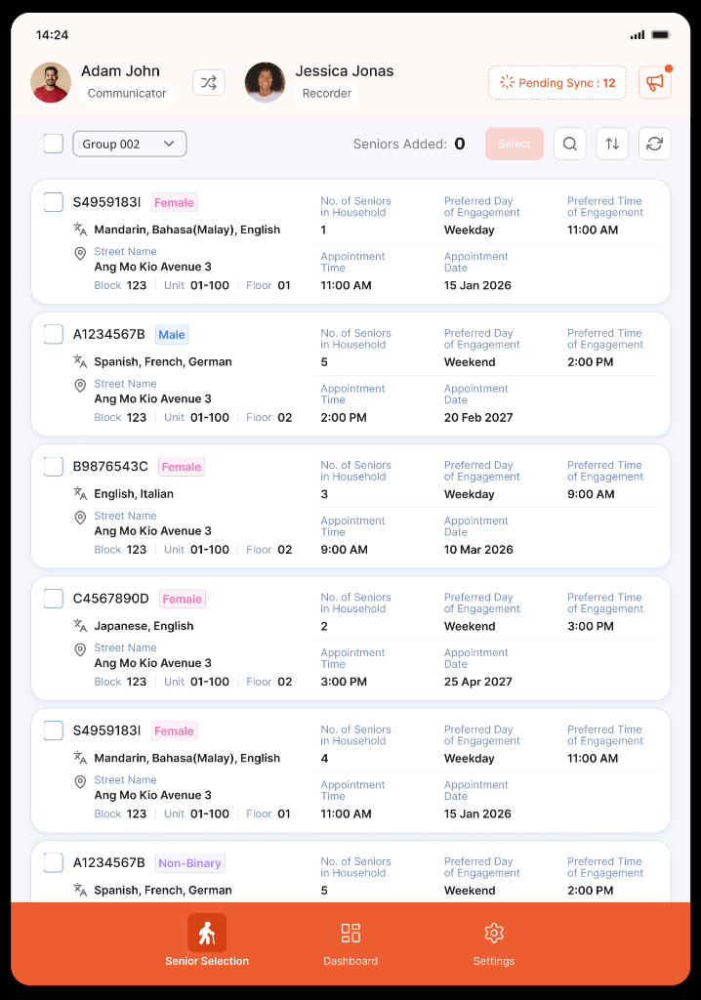
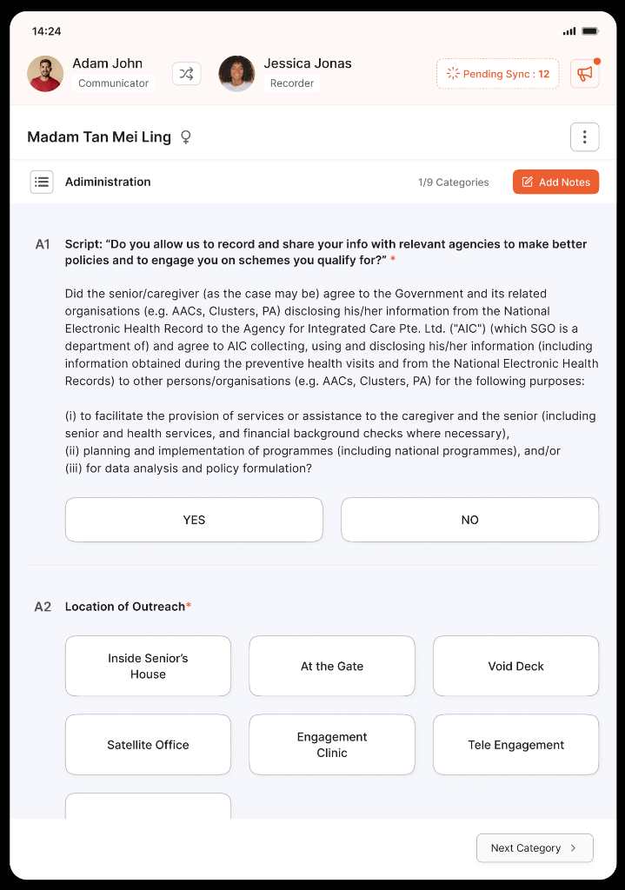
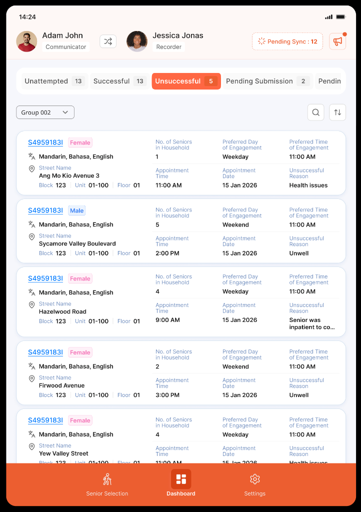
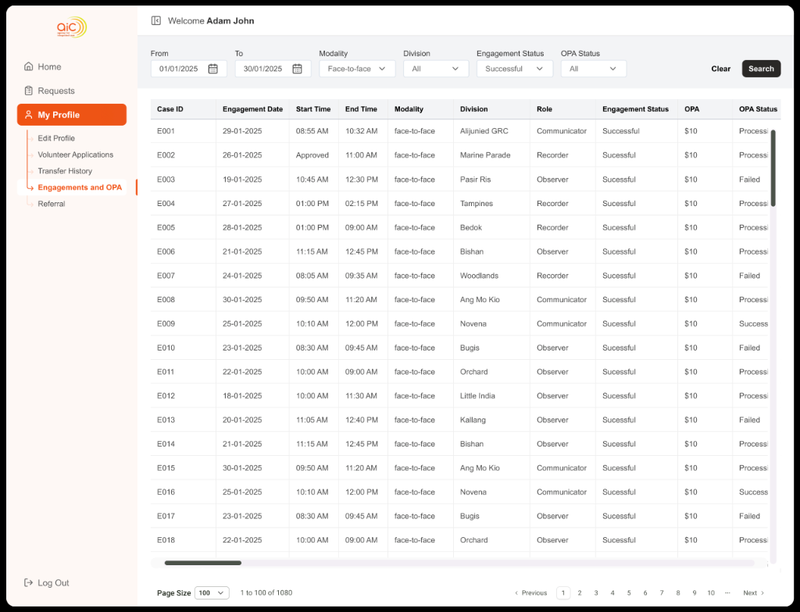
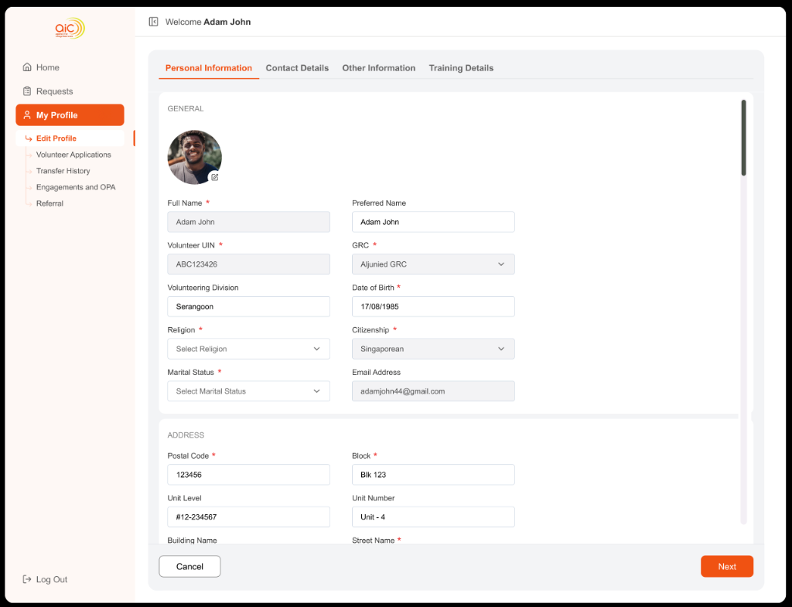

Designing the digital backbone for Singapore's national senior outreach & volunteer operations

Context
The Agency for Integrated Care (AIC) coordinates care services across Singapore, ensuring elderly citizens receive timely medical, social, and financial assistance through the Silver Generation Office (SGO). Grassroots volunteer befrienders conduct door-to-door home visits across Singapore's public housing (HDB) estates to check on vulnerable seniors, administer cognitive health assessments, and connect them with national care schemes.
I was the sole product designer across the entire digital ecosystem, architecting two complementary platforms:
- Senior Engagement Portal (Tablet App): An ergonomic, offline-first digital assessment tool tailored for volunteer pairs conducting doorstep surveys.
- Volunteer Portal (Web Operations Platform): A comprehensive portal for volunteer onboarding, milestone tracking, honorarium (OPA) disbursement, training compliance, and division governance.
The Problem
Previously, the outreach process was burdened by fragmented, paper-heavy workflows. In the field, volunteers juggled clipboards and pen-and-paper questionnaires in narrow, dim HDB corridors while trying to build rapport with elderly residents in multiple dialects. Back in the office, data transcription created multi-week backlogs, causing delays in emergency healthcare interventions. Meanwhile, volunteers had no visibility into their service hours, honorarium reimbursements, or award milestones.
In community healthcare, software should never get in the way of human empathy. The tablet had to be fast enough to use while standing at a doorway, while the web portal had to make volunteers feel valued, recognized, and supported.
Senior Engagement Portal (Tablet App)
1. "Communicator ⇄ Recorder" Dynamic & 1-Tap Role Swap
Outreach visits are always conducted in pairs for safety and effectiveness. One volunteer leads the conversation in the senior's native dialect ("Communicator"), while the other logs responses ("Recorder").
I designed a persistent top app bar displaying both active volunteers with an instant 1-tap role-swap trigger, allowing volunteers to switch roles seamlessly when encountering unexpected dialect barriers.

2. Ergonomic Split-Screen Assessment with Tactile Cards
Doorstep assessments take place standing up, often in narrow HDB corridors. I organized the clinical assessment into a 2-column tablet layout: a category progress rail on the left (Health, Psychosocial, ADLs, Follow-Up Actions) and massive, high-contrast touch cards on the right.
Large tap targets prevent mis-taps and reduce cognitive friction for volunteers across diverse age groups and digital literacy levels.

3. Conversational Consent & Actionable Session Dashboard
Adhering to Singapore PDPA privacy laws with embedded conversational scripts, alongside real-time unreachability drop-off tracking (hospitalized, unwell, etc.) for care coordinator triage.


Volunteer Operations & Recognition Portal (Web)
4. Operations Dashboard & Recognition Hub
To keep grassroots volunteers engaged and motivated, the home dashboard surfaces high-level service milestones (Years of Service, Total Hours Served, Seniors Helped, and Total Honorarium Disbursed), active workshop registrations, and Silver Generation Ambassador (SGA) merit awards (Gold, Silver, Bronze).

5. High-Density OPA Honorarium & Engagement Audit Ledger
Volunteers receive an Out-of-Pocket Allowance (OPA) for each completed engagement. I designed a dense, filterable ledger where volunteers and finance coordinators can audit visit records across GRC divisions (Aljunied, Bedok, Bishan, Ang Mo Kio, etc.), visit roles (Communicator, Recorder, Observer), and real-time payment processing statuses.

6. Structured Volunteer Onboarding & Profile Governance
Volunteers are matched to seniors based on language capabilities and geographical proximity. I designed a multi-step registration wizard that captures citizenship, dialect proficiency, GRC divisions, and training history, ensuring optimal volunteer placement across Singapore.

Outcome & Impact
Based on nationwide rollout and volunteer feedback across Singapore community clusters.